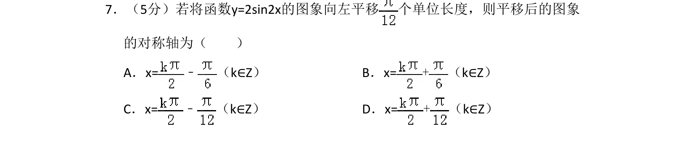
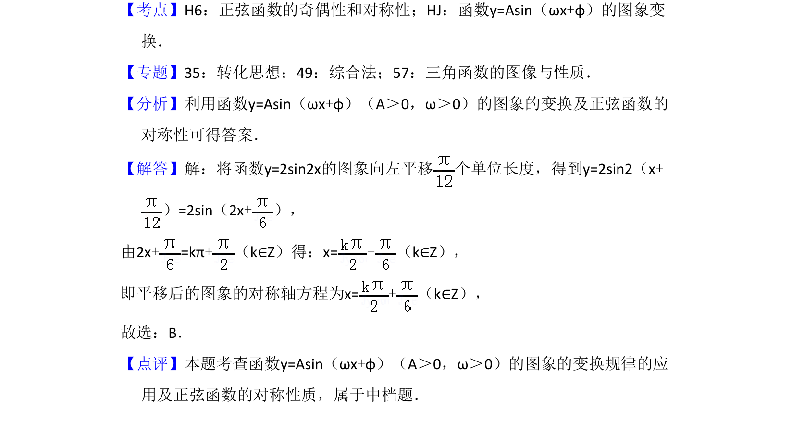

考点：函数y=Asin(ωx+φ)的图象变换 正弦函数的对称性

该题考查三角函数图象平移变换及正弦函数的对称轴求解。

📄 原 PDF 第 5 页：
素材/真题/吉林/2008-2024·（吉林）数学高考真题/2016年高考数学试卷（理）（新课标Ⅱ）（解析卷）.pdf
7．（5分）若将函数y=2sin2x的图象向左平移 个单位长度，则平移后的图象 的对称轴为（ ） A．x=﹣ （k∈Z）B．x=+（k∈Z） C．x=﹣ （k∈Z）D．x=+（k∈Z）
【考点】H6：正弦函数的奇偶性和对称性；HJ：函数y=Asin（ωx+φ）的图象变 换．菁优网版权所有 【专题】35：转化思想；49：综合法；57：三角函数的图像与性质． 【分析】利用函数y=Asin（ωx+φ）（A＞0，ω＞0）的图象的变换及正弦函数的 对称性可得答案． 【解答】解：将函数y=2sin2x的图象向左平移 个单位长度，得到y=2sin2（x+ ）=2sin（2x+）， 由2x+=kπ+（k∈Z）得：x=+（k∈Z）， 即平移后的图象的对称轴方程为x=+（k∈Z）， 故选：B． 【点评】本题考查函数y=Asin（ωx+φ）（A＞0，ω＞0）的图象的变换规律的应 用及正弦函数的对称性质，属于中档题．